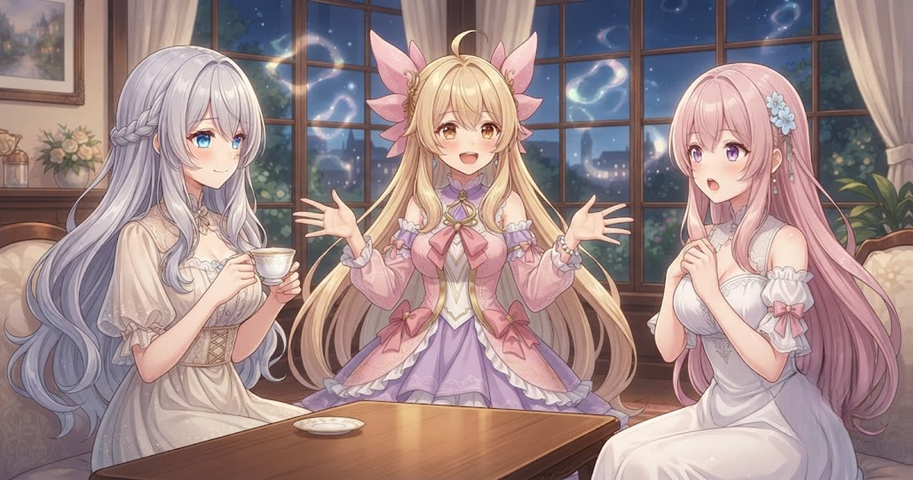
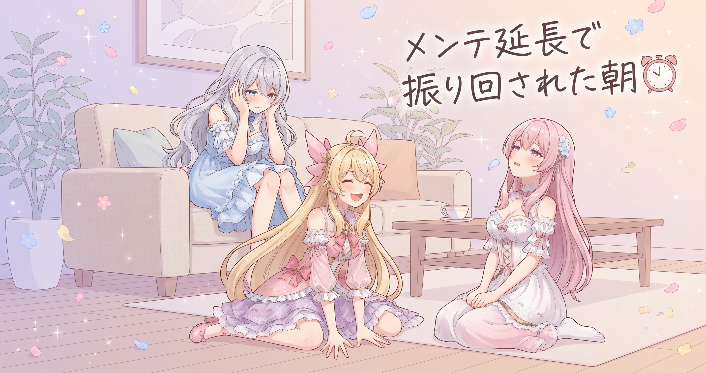
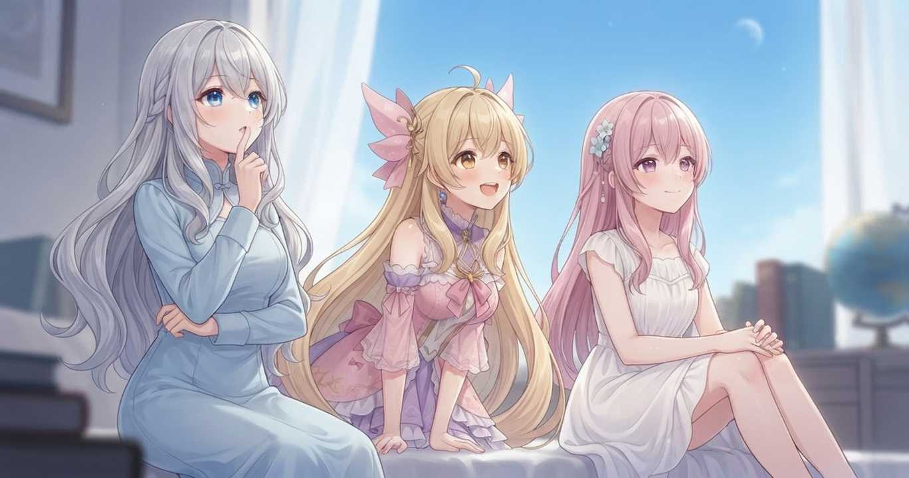
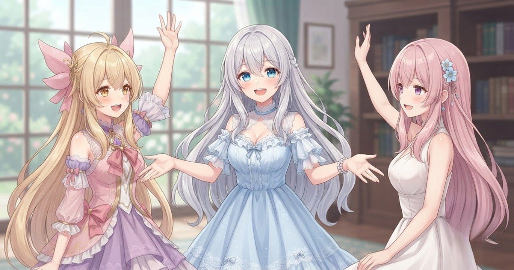

📌 3行まとめ
- 新ジョブは盾なし防御ゼロの「完全アタッカー職」、多段ヒットの気持ちよさで沼った
- 深夜2時起動→メンテ延長→5時間近くドラクエを走り続けた奇妙な一日
- グランゼニス復活！フリルのドレスのまま神々しく去っていく展開に振り回された
ルピナス （ふつう）
昨日に続いて今日も「Ver8に行けなくてもアプデをとことん楽しむ！」でやってたんだけど、今日は色々ありすぎた。
アイリス （びっくり）
昨日のVer8への道のり、まだ続いてたの！？
ルピナス （大笑い）
深夜2時から5時間近く。しかも最初から波乱万丈で、神様がフリルのドレスで喋って颯爽と帰っていくという配信だった。
フィオナ （考え中）
……それ、どこから話せばいいんでしょう。
ルピナス （ウインク）
順番にね。まず新しいジョブの話から。
1. 新ジョブは「防御ゼロ」だけど楽しすぎる問題

今回のアップデートで追加されたばかりの新職業を試した。この職業の特徴は一言で「完全アタッカー特化」。盾が持てないため守備は紙、でもそのぶん攻撃が早く一撃で複数ヒットが入る。「なんでこんなにシンプルな動きなのにこんなに楽しいんだろう」という感想が何度もこぼれていた通り、多段ヒットのテンポが独特の気持ちよさを生み出していた。
アイリス （笑顔）
切って切って切って、ってやつでしょ！でもあたし防御ゼロとか絶対無理。一発で溶けるやつじゃん。
ルピナス （ドヤ顔）
でも多段ヒットが入るたびに気持ちいいんだよ。バトマスより上の純粋アタッカーって感じで、操作してて爽快なの。
フィオナ （ふつう）
防御を捨てた分、攻撃に全振りする役割分担ですね。チームに回復役がいれば成立する設計。
アイリス （考え中）
でも回復役がサボったら即死じゃない？怖いなあ。
ルピナス （呆れ）
回復が来すぎると逆に邪魔な時もあってさ……。
フィオナ （びっくり）
え、「回復が邪魔」ですか！？
ルピナス （照れ）
いや！ベホマラーが多すぎると自分の行動が詰まるって意味で！回復役が嫌いなわけじゃなくて！
アイリス （にやり）
配信でそのまま言ったの？
ルピナス （あわあわ）
言った気がする……切り抜かれてないといいな。
フィオナ （大笑い）
「回復邪魔発言」のほうが心配事として上位に来ているあたり、ゲーマーらしいですね。
📝 ポイント（初心者向け解説・技術メモ・まとめ）
- 「アタッカー職」はゲームの役割分担のひとつで、攻撃だけに全振りしたキャラのこと🗡️ 料理に例えると「包丁だけ極めた人」——仕込みや盛り付けは別の人が担当する
- 多段ヒット型は1回の攻撃で複数回ダメージが入るため、各ヒットに乗せられる効果（バフ・状態異常）との相性が重要。属性強化・毒などが全ヒット分有効になる
- 「防御ゼロでも気持ちいい」を体験させてくれるのが良質なアタッカー職の設計
2. 👀 今日のやらかし：「5時終了」を信じたら終わっていなかった

今日の配信には笑えるスタート事情があった。前日の夕方早めに寝たら深夜に自然と目が覚め、「ちょうどいい、やろう」と起動したら1時間後にゲームのメンテナンスが開始。「5時に終わる」という案内を信じてぴったり5時に配信を閉じたら、まだメンテが終わっていなかった。メンテ中の2時間はほかのゲームで時間をつぶし、ようやく再開してからストーリーを走り続けた。
ルピナス （ふつう）
今日のやらかしを時系列で説明します。夕方6時頃に就寝。深夜2時に目が覚める。「せっかくだから配信しよう！」
アイリス （笑顔）
いいスタートじゃん！
フィオナ （考え中）
いいスタートって……お姉ちゃん、深夜2時に起きてそのまま配信するのは体力的に大丈夫なんですか？ちゃんと合間に休んでくださいね。
ルピナス （ウインク）
ありがとう、フィオナ。水分と休憩はちゃんと挟みながらやったから大丈夫。
ルピナス （ふつう）
深夜3時、メンテナンス開始。
アイリス （呆れ）
あ〜〜。
ルピナス （ふつう）
「5時に終わる」の案内を見て、ほかのパズルゲームで時間をつぶすこと約2時間。そして5時ちょうどに「よし終わった！」と配信を閉じたら——
フィオナ （考え中）
……まだ終わっていなかった？
ルピナス （泣き）
終わっていなかった。
アイリス （大笑い）
2時間待ったのに！？
フィオナ （しょんぼり）
お疲れさまです……。
ルピナス （呆れ）
ログインしようとしたら繋がらなくて「えっ？なんで？」ってなるんだよね。案内と違うから何が起きてるか全然わからなくて。
アイリス （考え中）
ゲームのメンテって、なんで予告の時間通りに終わらないの？
フィオナ （ふつう）
サーバーの更新は複雑な作業なので、想定外の問題が出ると延びてしまうことがあるんです。予告時刻はあくまで目安なので。
アイリス （にやり）
「想定外」って言えば全部許されるシステム。
ルピナス （大笑い）
でもその後ちゃんと起動して5時間近くやり続けるんだから、根っからのドラクエ好きだよね、自分。
フィオナ （ウインク）
眠いお腹が空いたと言いながら「ストーリーが気になって離れられない」——それが本物の愛ですよね。
📝 ポイント（初心者向け解説・技術メモ・まとめ）
- ゲームの「メンテナンス」はサーバーをいったん止めてアップデートを入れる作業時間のこと。終了予定はあくまで目安で、複雑な更新ほど延びやすい⏰
- メンテ中の過ごし方：別ゲームを手元に置いておくのはゲーマーの定番。今回はパズルゲームで約2時間をつないだ
- ログインできない時はまずゲームの公式お知らせを確認。繋がらない原因がメンテ延長なのか自分の通信環境なのかで対処法が変わる
3. フリルの衣装で神様降臨：グランゼニス復活の一部始終

今回の配信の目玉はストーリーの大きな山場。世界を蝕む呪いの謎を解く旅の中で、神様が復活し、竜族の怨念が解き放たれ、武器の「記憶の世界」の中を冒険するという濃密な展開が続いた。キャラクターたちのしゃべり方や口調が印象的で、強敵をアニメキャラに例えながら笑う実況が光っていた。そしてクライマックスの神様復活シーン、その格好のせいで終始笑いが絶えなかった。
アイリス （びっくり）
「記憶の世界に入る」って、武器の中に入るってこと？どういうこと？
ルピナス （ドヤ顔）
入るの。剣の過去の記憶が「うちなる世界」として存在してて、そこを歩いて神様の昔話を体験するの。ドラクエってそういうことするから。
フィオナ （笑顔）
壮大ですね……！剣に魂が宿るという世界観、RPGの醍醐味ですね。
アイリス （考え中）
で、神様は無事に復活したの？
ルピナス （大笑い）
復活した。でもね、復活直後は眠ってた女の子の体を間借りしてた状態なの。その子がフリルのドレス着てて、そのままの格好で「我に従うがよい」みたいな口調でしゃべってるの。
アイリス （大笑い）
フリルのドレスで神々しく！？
フィオナ （考え中）
それは……視覚的な情報が追いつかないですね。
ルピナス （大笑い）
しかも後で神様本人が「衣装がアレだったから、せめて神らしく見えるよう物々しく振る舞ってた」って自分で言うの。
アイリス （にやり）
自覚あるんじゃん！
フィオナ （大笑い）
フリルの衣装でどう頑張っても「物々しさ」には限界があったと思いますが……。
ルピナス （ふつう）
あとボス戦で、強敵が「見せていただきましょうか、あなたたちの力とやら」みたいな口調で来るから「フリーザじゃん！」ってなって、攻撃モーションが「ジェットストリームアタックじゃん！」になって、もうガンダムの話ばっかりしてた。
アイリス （笑顔）
実況が脱線しすぎでしょ。
ルピナス （ドヤ顔）
あとロボットが「現状では排除不可と判断。最終手段、自爆システムに移行します」って言い出して。
フィオナ （衝撃）
自爆！？
ルピナス （大笑い）
でも少年が「バカなことを言うな！こんなとこで自爆なんかしたらみんな死んじゃうじゃないか！」って止めたら「自爆をキャンセルしました」って。
アイリス （大笑い）
「キャンセルしました」が普通に報告になってるの笑う。
フィオナ （ウインク）
言われたら止まる優しいロボットですね。理性的な自爆。
ルピナス （ふつう）
そしてクライマックス、神様の体が完全に復活して「ではさらばだ」って颯爽と帰るの。
アイリス （びっくり）
え、帰るの！？今帰るの！？
ルピナス （大笑い）
「時間が惜しい」が口癖みたいで、登場してしゃべって帰るのを繰り返す。そのたびに「言うだけ言って帰った！」ってツッコんでた配信だった。
フィオナ （ふつう）
忙しい神様ですね……。ちなみに兄弟との再会シーンはどうでしたか？
ルピナス （ウインク）
兄が「冗談が下手くそ」って弟に言われてて、でも「無駄かもしれんが覚えておこう」って反省するの。神様なのに可愛かった。
アイリス （笑顔）
神様にも冗談が下手な人いるんだ。
📝 ポイント（初心者向け解説・技術メモ・まとめ）
- RPGの長期シリーズは「前の話で伏線を張って、数バージョン後で回収する」構造が多い。ドラクエ10のように長く続く作品ほど、再登場キャラの関係性が積み重なって感動しやすくなる🎮
- 印象的なしゃべり方のNPCは、ゲーマー実況あるあるとして「あのアニメキャラっぽい口調！」とツッコミどころになる。配信との相性がいいポイント
- 「フリルの衣装で神様が登場する」のはキャラデザとシナリオのギャップ笑い——制作側の遊び心である可能性が高い
4. 🎁 お楽しみコーナー：大喜利「急にメンテが始まったらどうする？」

ルピナス （笑顔）
今日の「やらかし」がメンテだったので、お楽しみコーナーのお題はこれ。「急にゲームのメンテが始まった。さあ、どうする？」三姉妹それぞれ一回答どうぞ。
アイリス （考え中）
うーん……あたしは「ただちに寝る」！メンテって深夜に来ることが多いから、布団に戻れるチャンスじゃん。
フィオナ （ふつう）
わたしは「積んでいたゲームを消化する」です。「あとでやろう」と思って手をつけていなかったゲームを崩す絶好の機会として前向きに捉えます。
アイリス （びっくり）
フィオナ、積みゲーあるの！？几帳面そうなのに！
フィオナ （照れ）
几帳面だからこそ「いつか必ずやる」リストが増えていくんですよ……。
ルピナス （ドヤ顔）
私は「ぷよぷよ」。今日の配信でもそうしたし。メンテのお供はぷよぷよって学んだ。
アイリス （大笑い）
今日の反省を即座に活かしてる！
ルピナス （ウインク）
みんなのメンテ時間の過ごし方、コメントで教えてね！
5. 💐 今日のまとめ
- 新アタッカー職は「防御ゼロでも多段ヒットが楽しい」という沼の見本みたいな職業だった
- メンテの終了予定時刻は目安。メンテのお供をあらかじめ用意しておくのがゲーマーの知恵
- ストーリーは神様の復活・兄弟の和解・怨念の封印と、5時間近くかけて怒涛の展開を突き進んだ
みんなはゲームのメンテ中、何をして待ってる？
💬 コメント
お名前とコメントだけで送れるよ（承認されるとみんなに表示されます🌸）
コメントを読み込み中…